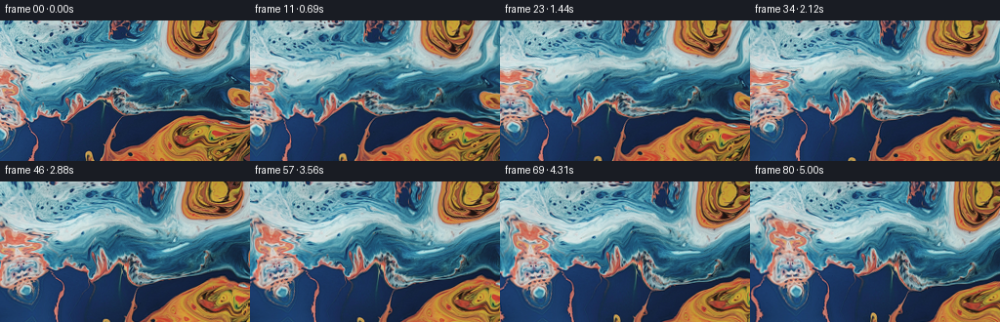
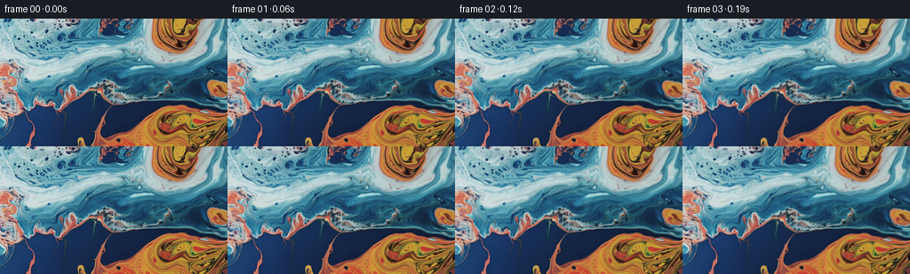

CODING AGENTS AS PIXEL WORLD MODELS
traex/GPT-6.1-Sol · 0001_s2
点击播放 · 原生 RGB 像素
逐轮保存的候选
回放视频、检查图与代码变化。
每份候选均可单独播放。实际图片检查记录在下方工具轨迹中。
候选 01播放与检查图
点击播放 · 原生 RGB 像素


展开代码变化
--- 上一保存版本
+++ 本次保存版本
@@ -0,0 +1,132 @@
+"""Animate the supplied macro-liquid photograph with a leftward tracking shot.
+
+The photograph supplies all appearance. Smooth, area-preserving eddies and
+travelling surface waves transport its details; nothing is drawn over it.
+"""
+from pathlib import Path
+import json
+import numpy as np
+from PIL import Image
+import artifact_io
+
+ROOT = Path(__file__).resolve().parent
+
+
+def cubic(x):
+ a = np.abs(x)
+ return np.where(a < 1, 1.5*a**3-2.5*a*a+1,
+ np.where(a < 2, -.5*a**3+2.5*a*a-4*a+2, 0)).astype(np.float32)
+
+
+def reflect(x, size):
+ q = np.mod(x, 2*(size-1))
+ return np.where(q <= size-1, q, 2*(size-1)-q)
+
+
+def sample(im, x, y):
+ """Catmull-Rom reconstruction, retaining the fine wet-surface texture."""
+ h,w = im.shape[:2]
+ x = reflect(x,w)
+ y = reflect(y,h)
+ ix, iy = np.floor(x).astype(np.int32), np.floor(y).astype(np.int32)
+ fx, fy = x-ix, y-iy
+ out = np.zeros((*x.shape,3),np.float32)
+ wx = [cubic(fx-k) for k in (-1,0,1,2)]
+ wy = [cubic(fy-k) for k in (-1,0,1,2)]
+ for j,dy in enumerate((-1,0,1,2)):
+ yy=np.clip(iy+dy,0,h-1)
+ for i,dx in enumerate((-1,0,1,2)):
+ out += im[yy,np.clip(ix+dx,0,w-1)]*(wy[j]*wx[i])[...,None]
+ return out
+
+
+def make_canvas(image):
+ # Continue this abstract surface beyond the photographed window. A
+ # gradually sheared reflected continuation keeps its actual colors and
+ # small-scale structure without an empty or stretched reveal at the left.
+ border=80
+ h,w=image.shape[:2]
+ yy,xx=np.mgrid[-border:h+border,-border:w+border].astype(np.float32)
+ distance=np.maximum(-xx,0)
+ v=yy + .19*distance + 5.0*np.sin(distance/26)*np.sin(yy/43+.2)
+ u=np.where(xx<0, -.91*xx,xx)
+ right=np.maximum(xx-(w-1),0)
+ v-=.11*right
+ return sample(image.astype(np.float32),u,v),border
+
+
+def surface_map(x,y,t):
+ # Inverse map for two broad eddies in the liquid. The rotation tapers
+ # smoothly out, so both pigment regions retain their characteristic shape.
+ u=x.copy(); v=y.copy()
+ for cx,cy,radius,speed in ((110,67,74,.038),(205,122,61,-.044),(-18,91,55,-.025)):
+ dx=u-cx; dy=v-cy
+ angle=-speed*t*np.exp(-(dx*dx+dy*dy)/(2*radius*radius))
+ c=np.cos(angle); s=np.sin(angle)
+ u=cx+c*dx-s*dy
+ v=cy+s*dx+c*dy
+
+ # A very gentle coherent surface drift, with vertical shear rather than
+ # uniformly sliding the whole photograph as if it were a flat poster.
+ u -= 1.05*t*np.sin((v-24)/61)
+ v -= .28*t*np.sin((u+8)/79)
+
+ # Stream-function wave displacements: orthogonal to each wave vector,
+ # hence volume/area preserving to first order. Subtracting the phase at
+ # zero time makes the initial geometry agree exactly with the photograph.
+ for wavelength,direction,amp,omega,phase in (
+ (124,.54,4.1,1.04,.3),
+ (79,-.72,2.2,.82,1.8),
+ (47,1.10,1.05,1.47,2.1),
+ (23,-.31,.34,2.02,.9),
+ ):
+ k=2*np.pi/wavelength
+ nx,ny=np.cos(direction),np.sin(direction)
+ p=k*(nx*x+ny*y)+phase
+ displacement=amp*(np.sin(p-omega*t)-np.sin(p))
+ u+=-ny*displacement
+ v+= nx*displacement
+ return u,v
+
+
+def generate():
+ spec=json.loads((ROOT/'task_spec.json').read_text())
+ first=np.array(Image.open(ROOT/'first_frame.png').convert('RGB'),dtype=np.uint8)
+ h,w=first.shape[:2]
+ assert (w,h)==(spec['width'],spec['height'])
+ canvas,border=make_canvas(first)
+ # Restore the observed part exactly, avoiding any processing at time zero.
+ canvas[border:border+h,border:border+w]=first
+ yy,xx=np.mgrid[:h,:w].astype(np.float32)
+ frames=np.empty((spec['frames'],h,w,3),np.uint8)
+ frames[0]=first
+ for i in range(1,len(frames)):
+ t=i/spec['fps']
+ # Camera translates left; fixed surface features travel right. Small
+ # ease-in is confined to the first fraction of a second of the shot.
+ pan=8.4*(t-.20*(1-np.exp(-t/.20)))
+ world_x=xx-pan
+ u,v=surface_map(world_x,yy,t)
+ rgb=sample(canvas,u+border,v+border)
+ # Evolving grazing-light caustics: modulate existing reflections, not
+ # new white lines. Low amplitude preserves the original tonal range.
+ p=.043*world_x+.067*yy
+ glint=(np.sin(p-1.02*t)-np.sin(p))
+ p2=.097*world_x-.043*yy+1.3
+ fine=(np.sin(p2-1.48*t)-np.sin(p2))
+ bright=np.clip((rgb.mean(axis=-1)-45)/155,0,1)
+ gain=1+.017*glint+.006*fine
+ rgb=rgb*gain[...,None]+(1.4*bright*glint)[...,None]
+ frames[i]=np.clip(np.rint(rgb),0,255).astype(np.uint8)
+ # Useful local intermediate for reproducibility and numeric inspection.
+ np.save(ROOT/'generated_rgb.npy',frames)
+ artifact_io.save(frames,ROOT)
+ return frames
+
+
+if __name__=='__main__':
+ frames=generate()
+ delta=np.abs(frames[1:].astype(np.float32)-frames[:-1].astype(np.float32))
+ print('RGB video:',frames.shape,frames.dtype)
+ print('Frame-to-frame mean RGB difference:',np.round(delta.mean(axis=(1,2,3)),3))
+ print('First frame identical:',np.array_equal(frames[0],np.array(Image.open(ROOT/'first_frame.png').convert('RGB'))))
可观测工具轨迹
实际执行的命令与返回图片。
命令 1exit 0
/bin/bash -lc 'ls -la && cat prompt.txt && cat GENERATION_RULES.md'
命令 2exit 0
/bin/bash -lc "cat task_spec.json && cat artifact_io.py && python - <<'PY'
from PIL import Image
import numpy as np
im=np.array(Image.open('first_frame.png').convert('RGB'))
print(im.shape)
print('range',im.min(axis=(0,1)),im.max(axis=(0,1)))
# average rgb in a 64x36 map, map nearest rough color palette
im=np.asarray(Image.fromarray(im).resize((64,36)))
pal=np.array([[0,0,0],[255,255,255],[0,80,120],[0,150,190],[0,220,240],[10,60,210],[255,70,0],[255,140,0],[255,210,80],[130,55,0],[70,130,180],[130,130,130]])
cs='KWbcCdroynBg'
for row in im:
print(''.join(cs[j] for j in np.argmin(((row[:,None,:].astype(float)-pal[None,:,:])**2).sum(-1),axis=1)))
print('sample cell means RGB')
im=np.asarray(Image.open('first_frame.png').convert('RGB'))
for y in range(0,144,12):
print(y,[tuple(im[y:y+12,x:x+16].mean(axis=(0,1)).astype(int)) for x in range(0,256,16)])
PY"命令 3exit 0
/bin/bash -lc "python - <<'PY'
import numpy as np
from PIL import Image
im=np.array(Image.open('first_frame.png').convert('RGB'))
a=np.array(Image.fromarray(im).resize((100,56)))
l=(a[...,0]*.2126+a[...,1]*.7152+a[...,2]*.0722)
chars=' .,:;irsXA253hMHGS#9B&@'
for row in l: print(''.join(chars[min(int(x/256*len(chars)),len(chars)-1)] for x in row))
print('neighbor rms', np.mean(np.abs(im[:,1:].astype(float)-im[:,:-1])),np.mean(np.abs(im[1:].astype(float)-im[:-1])))
PY"命令 4exit 0
/bin/bash -lc "cat > generate.py <<'PY'
\"\"\"Animate the supplied macro-liquid photograph with a leftward tracking shot.
The photograph supplies all appearance. Smooth, area-preserving eddies and
travelling surface waves transport its details; nothing is drawn over it.
\"\"\"
from pathlib import Path
import json
import numpy as np
from PIL import Image
import artifact_io
ROOT = Path(__file__).resolve().parent
def cubic(x):
a = np.abs(x)
return np.where(a < 1, 1.5*a**3-2.5*a*a+1,
np.where(a < 2, -.5*a**3+2.5*a*a-4*a+2, 0)).astype(np.float32)
def reflect(x, size):
q = np.mod(x, 2*(size-1))
return np.where(q <= size-1, q, 2*(size-1)-q)
def sample(im, x, y):
\"\"\"Catmull-Rom reconstruction, retaining the fine wet-surface texture.\"\"\"
h,w = im.shape[:2]
x = reflect(x,w)
y = reflect(y,h)
ix, iy = np.floor(x).astype(np.int32), np.floor(y).astype(np.int32)
fx, fy = x-ix, y-iy
out = np.zeros((*x.shape,3),np.float32)
wx = [cubic(fx-k) for k in (-1,0,1,2)]
wy = [cubic(fy-k) for k in (-1,0,1,2)]
for j,dy in enumerate((-1,0,1,2)):
yy=np.clip(iy+dy,0,h-1)
for i,dx in enumerate((-1,0,1,2)):
out += im[yy,np.clip(ix+dx,0,w-1)]*(wy[j]*wx[i])[...,None]
return out
def make_canvas(image):
# Continue this abstract surface beyond the photographed window. A
# gradually sheared reflected continuation keeps its actual colors and
# small-scale structure without an empty or stretched reveal at the left.
border=80
h,w=image.shape[:2]
yy,xx=np.mgrid[-border:h+border,-border:w+border].astype(np.float32)
distance=np.maximum(-xx,0)
v=yy + .19*distance + 5.0*np.sin(distance/26)*np.sin(yy/43+.2)
u=np.where(xx<0, -.91*xx,xx)
right=np.maximum(xx-(w-1),0)
v-=.11*right
return sample(image.astype(np.float32),u,v),border
def surface_map(x,y,t):
# Inverse map for two broad eddies in the liquid. The rotation tapers
# smoothly out, so both pigment regions retain their characteristic shape.
u=x.copy(); v=y.copy()
for cx,cy,radius,speed in ((110,67,74,.038),(205,122,61,-.044),(-18,91,55,-.025)):
dx=u-cx; dy=v-cy
angle=-speed*t*np.exp(-(dx*dx+dy*dy)/(2*radius*radius))
c=np.cos(angle); s=np.sin(angle)
u=cx+c*dx-s*dy
v=cy+s*dx+c*dy
# A very gentle coherent surface drift, with vertical shear rather than
# uniformly sliding the whole photograph as if it were a flat poster.
u -= 1.05*t*np.sin((v-24)/61)
v -= .28*t*np.sin((u+8)/79)
# Stream-function wave displacements: orthogonal to each wave vector,
# hence volume/area preserving to first order. Subtracting the phase at
# zero time makes the initial geometry agree exactly with the photograph.
for wavelength,direction,amp,omega,phase in (
(124,.54,4.1,1.04,.3),
(79,-.72,2.2,.82,1.8),
(47,1.10,1.05,1.47,2.1),
(23,-.31,.34,2.02,.9),
):
k=2*np.pi/wavelength
nx,ny=np.cos(direction),np.sin(direction)
p=k*(nx*x+ny*y)+phase
displacement=amp*(np.sin(p-omega*t)-np.sin(p))
u+=-ny*displacement
v+= nx*displacement
return u,v
def generate():
spec=json.loads((ROOT/'task_spec.json').read_text())
first=np.array(Image.open(ROOT/'first_frame.png').convert('RGB'),dtype=np.uint8)
h,w=first.shape[:2]
assert (w,h)==(spec['width'],spec['height'])
canvas,border=make_canvas(first)
# Restore the observed part exactly, avoiding any processing at time zero.
canvas[border:border+h,border:border+w]=first
yy,xx=np.mgrid[:h,:w].astype(np.float32)
frames=np.empty((spec['frames'],h,w,3),np.uint8)
frames[0]=first
for i in range(1,len(frames)):
t=i/spec['fps']
# Camera translates left; fixed surface features travel right. Small
# ease-in is confined to the first fraction of a second of the shot.
pan=8.4*(t-.20*(1-np.exp(-t/.20)))
world_x=xx-pan
u,v=surface_map(world_x,yy,t)
rgb=sample(canvas,u+border,v+border)
# Evolving grazing-light caustics: modulate existing reflections, not
# new white lines. Low amplitude preserves the original tonal range.
p=.043*world_x+.067*yy
glint=(np.sin(p-1.02*t)-np.sin(p))
p2=.097*world_x-.043*yy+1.3
fine=(np.sin(p2-1.48*t)-np.sin(p2))
bright=np.clip((rgb.mean(axis=-1)-45)/155,0,1)
gain=1+.017*glint+.006*fine
rgb=rgb*gain[...,None]+(1.4*bright*glint)[...,None]
frames[i]=np.clip(np.rint(rgb),0,255).astype(np.uint8)
# Useful local intermediate for reproducibility and numeric inspection.
np.save(ROOT/'generated_rgb.npy',frames)
artifact_io.save(frames,ROOT)
return frames
if __name__=='__main__':
frames=generate()
delta=np.abs(frames[1:].astype(np.float32)-frames[:-1].astype(np.float32))
print('RGB video:',frames.shape,frames.dtype)
print('Frame-to-frame mean RGB difference:',np.round(delta.mean(axis=(1,2,3)),3))
print('First frame identical:',np.array_equal(frames[0],np.array(Image.open(ROOT/'first_frame.png').convert('RGB'))))
PY
python generate.py"命令 5exit 0
/bin/bash -lc "python - <<'PY'
import numpy as np
from PIL import Image
import generate
f=np.load('generated_rgb.npy',mmap_mode='r')
p=np.load('pixels.npz')['pixels']
print('Packed artifact:',p.shape,p.dtype)
print('RGB frame zero exact:',np.array_equal(f[0],np.asarray(Image.open('first_frame.png').convert('RGB'))))
y,x=np.mgrid[:144,:256].astype(np.float32)
for t in [0,1,2.5,5]:
pan=8.4*(t-.20*(1-np.exp(-t/.20)))
u,v=generate.surface_map(x-pan,y,t)
ux=np.gradient(u,axis=1); uy=np.gradient(u,axis=0)
vx=np.gradient(v,axis=1); vy=np.gradient(v,axis=0)
jac=ux*vy-uy*vx
print('time',t,'camera left pixels',round(pan,2),'mapping jacobian',np.percentile(jac,[0,5,50,95,100]).round(3))
print('Final frame mean RGB',f[-1].mean(axis=(0,1)).round(2))
PY
command -v ffmpeg || true
ls -lh pixels.npz index.html generated_rgb.npy"保存候选 1 份；完成命令 5 次；可验证图片返回 0 张。原始 API 响应与完整日志保留在本地。